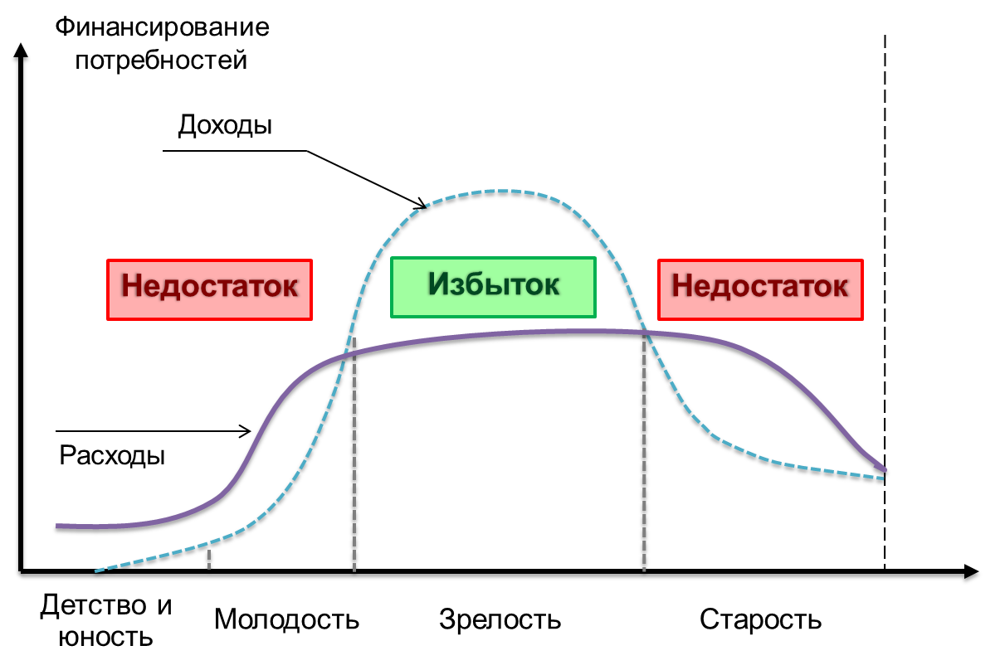
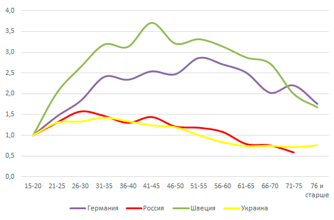
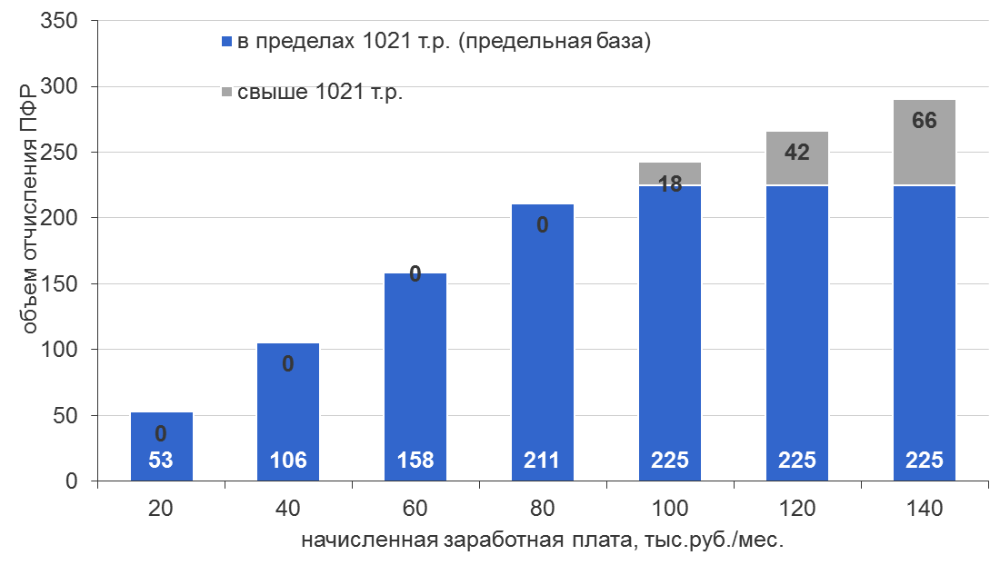
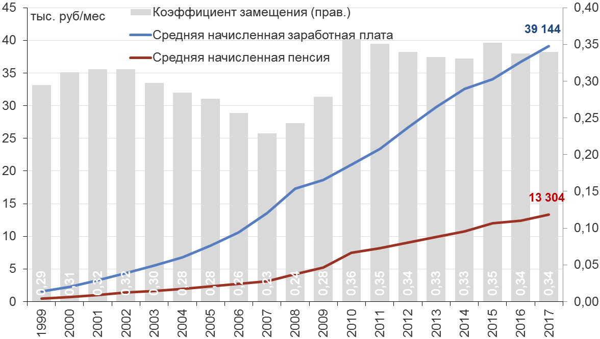
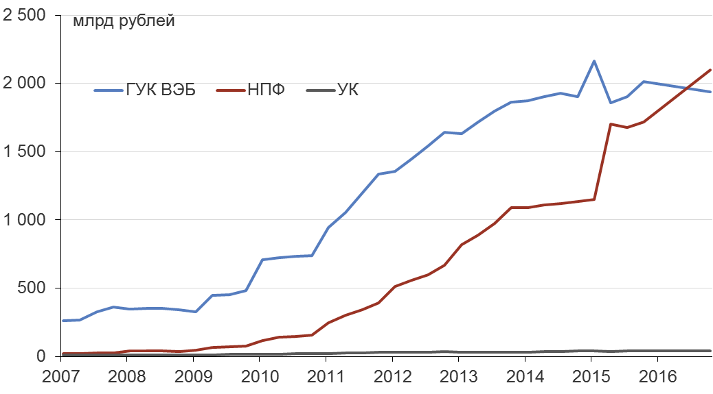
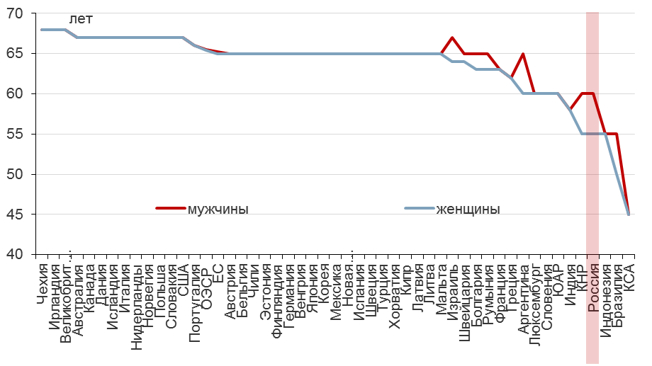

- понять общие принципы устройства и задачи пенсионных систем
- понять, каким образом пенсионная система связана с экономикой и финансовыми рынками
- изучить устройство текущей пенсионной системы РФ
- обсудить варианты относительно будущего устройства пенсионной системы
2018-04-12
Цели лекции
Пенсионная система - введение
- Пенсия – это отложенные сбережения на тот период, когда человек становится нетрудоспособным по тем или иным причинам (возраст, нетрудоспособность или просто нежелание работать).
- Пенсия – это не только государственные пенсия. Возможны другие варианты – сбережения, получение рентного дохода (сдача квартиры), поддержка со стороны детей.
- Задача пенсионной системы – обеспечить перенос финансовых ресурсов во времени на длительный промежуток времени (до 30-40 лет).
- Первые общегосударственные появились в конце 19 века в Германии – при канцлере Бисмарке.
- Сейчас практически во всех странах есть государственная пенсионная система. Но характер и масштаб пенсионных систем отличаются по разным странам.
Финансы в жизни человека

Изменение доходов с возрастом

Пенсионная системы - основные типы
- Схема с установленным размером выплат (defined benefit). Пенсия выплачивается по достижению определенного возраста работнику, в зависимости от заработной платы и трудового стажа. Выплата осуществляется в виде пожизненного аннуитета - с компенсацией - согласно законодательству. Условный аналог в российской терминологии – распределительная система.
- Схема с установленным размером взносов (defined contribution). Размеры выплат зависит от суммы отчислений и накопленного дохода от инвестирования отчислений. Государство не устанавливает правил по индексации или минимальным суммам. Обычно используется как вспомогательная система. Условный аналог в российской терминологии – накопительная система.
Типология пенсионных систем (ОЭСР)
Российская пенсионная система
- До 2002 года в России существовала распределительная система пенсионного обеспечения, с 2002 года - "гибридная" система, которая сочетает элементы распределительной и накопительной системы. Но приоритет остается за распределительной системой.
- Работники (формально за них это делают работодатели) осуществляют обязательные страховые выплаты в пенсионную систему (взносы ПФР - Пенсионный фонд РФ) и иные внебюджетные фонды.
- Пенсионеры получают государственную пенсию. Отдельные категории работников имеют право на досрочную пенсию (военные, тяжелые производства, работа на Крайнем Севере) и/или дополнительная пенсию по законодательству (военные, госслужащие, летчики-испытатели и проч.).
- Есть негосударственная пенсия - если осуществлялись взносы в негосударственную пенсионную систему (как правило, корпоративные пенсионные программы).
Cтавка страховых взносов (2018), %
| Взнос | Основной тариф | Льготный тариф для "упрощенки" |
|---|---|---|
| Взносы в ПФР (на обязательное пенсионное страхование) | 22 | 20 |
| Взносы в ФСС (на обязательное социальное страхование на случай временной нетрудоспособности и в связи с материнством) | 2,9 | |
| Взносы в ФФОМС (на обязательное медицинское страхование) | 5,1 | |
| Взносы в ПФР с выплат, превышающих предельную базу | 10 | |
| Совокупная ставка | 30 | 20 |
Предельная база дохода за год = 1021 тыс. рублей для ПФР (в 2017 году - 876 тыс. рублей)
Зависимость между среднемесячной заработной платой и отчислениями в ПФР

Распределение взносов в ПФР
Взносы в ПФР распределялись следующим образом:
- плательщики 1966 года рождения и старше — вся сумма (22%) идет на финансирование страховой части;
плательщики 1967 года рождения и младше: а) вариант I: 22% перечисляется на финансирование страховой пенсии, из них 6% – солидарная часть, 16% – индивидуальная часть ; 0% перечисляется на финансирование накопительной части. б) вариант II: 16% перечисляется на финансирование страховой части, из них 6% – солидарная часть, 10% – индивидуальная часть; и 6% перечисляется на финансирование накопительной части.
С 2014 года введен мораторий на отчисления в накопительную часть пенсии ("заморозка"). Мораторий сохраняется и в 2016 году. "Цена" вопроса - 300-350 млрд рублей ежегодно.
Как определяется пенсия сейчас?
Пенсия = ФВ (фиксированная выплата) + ИПК * СИПК
- С 2015 года введена новая пенсионная формула на основе баллов - "индвидуальный пенсионной коэффициент", которая определяет величину страховой пенсии.
- Условия получения страховой пенсии:
- Достижение возраста (60 лет – для мужчин, 55 лет – для женщин)
- Наличие стажа не менее 15 лет (с 2024 года)
- Наличие минимального количества баллов (не менее 30). Максимальное количество пенсионных баллов за год с 2021 года – 10, в 2018 году – 8,70.
Части пенсиии
Б. Фиксированная Выплата (базовая часть) пенсии с 01.01.2018 составляет 4982 рублей 90 копеек в месяц – это минимальный размер пенсии, который не зависит ни от стажа, ни от размеров социальных взносов. Он гарантирован любому пенсионеру.
СЧ зависит от баллов и определяется по формуле.
СЧ. Страховая часть
СЧ = ИПК * СИПК, где ИПК – сумма всех пенсионных баллов, СИПК - стоимость пенсионного балла в год назначения пенсии (81,49 рублей в 2018 году).
СП = ИПК * 81.49 + 4982.90 (в 2018 году)
НЧ. Накопительная часть
НЧ = ПН/Т. ПН – сумма пенсионных накоплений, учтенная на индивидуальном счете, Т – 246 месяца (20,5 лет).
Каков размер пенсии?
- Средний размер пенсии в России в феврале 2018 года составлял 13,3 тыс. рублей в месяц, средняя заработная плата – 39,8 тыс. рублей.
- Коэффициент замещения – отношение пенсии к заработной плате. Это условный показатель замещения дохода человека после выхода на пенсию. Конвенция МОТ по минимальным стандартам социальной защиты устанавливает минимальное значение к-та замещения в 40% для лица с 30-летним трудовым стажем.
- Российская пенсионная система не обеспечивает коэффициент замещения в 40%.
Размер пенсии и средней заработной платы в России

Накопительная часть пенсии
- В рамках действующей пенсионной системы 6% взносов в ПФР для лиц младше 1967 г.р. должны использоваться на формирование накопительной части пенсии – до предельного объема (для 2018 года – это теоретически сумма до 61,26 тыс. рублей за год )
- Но с 2014 году введен мораторий на отчисления в накопительную часть, он не отменен.
- Накопительная часть учитывается на индивидуальном счете человека. Информация о текущем состоянии счета доступна на портале Госуслуг.
- Сейчас средства на накопительном счету пенсии увеличиваются только за счет инвестиционного дохода.
- Судьба накопительной части пенсионной системы остается неясной.
Индивидуальный пенсионный капитал
- Идея 2016/2017 годов от Министерства финансов и ЦБ. Переход на полностью добровольную принцип накопительных взносов в пенсионную систему.
- Основа – добровольные взносы участников по ставке от 0% до 6%. Стимул – предоставление налогового вычета по НДФЛ в полном объеме, но не более 6% заработной платы за год.
- Точные параметры системы пока не определены.
- Новая система может заработать с 2019 года.
Варианты размещения накопительной часть пенсии
- ГУК (Государственная управляющая компании – ВЭБ) – средства "молчунов", которые до 2016 года не перевели свои пенсионные накопления в НПФ или УК. У "молчунов" не формируется накопительной части пенсии.
- НПФ (негосударственные пенсионные фонды) – обеспечивают инвестирование средств пенсионных накоплений, а также управление индивидуальными счетами по накопительной части.
- УК (управляющие компании) обеспечивают инвестирование средств пенсионных накоплений, управление накопительным счетом осуществляет ПФР.
Активы пенсионных накоплений – по категориям управляющих

НПФ или УК
Во что вкладываются пенсионные накопления? Пример НПФ
Мораторий на переход из НПФ
- Если переход из фонда в фонд осуществляется чаще раза в пять лет, гражданин теряет инвестиционный доход с момента предыдущего перехода. В 2017 году граждане потеряли 50 млрд рублей, так как не знали об этом.
Основные противоречия в пенсионной системе
- Негативные демографические тенденции
- Растущий дефицит федерального бюджета и трансферт пенсионному фонду из бюджета
- Неэффективная структура пенсионных обязательств – низкий срок выхода на пенсию и большая доля "досрочников"
- Неопределенность относительно накопительной части пенсии
- Ограничения на дальнейшее повышение ставок страховых взносов
Демографический прогноз численности населения

Сбалансированность Пенсионного фонда (ПФР)
Средний возраст выхода на пенсию по странам

"Белая" занятость и количество пенсионеров
Реформа пенсионной системы – Концепция Минфина/ЦБ (2016)
- Повышение отчислений с заработной платы за счет полного отказа от регрессивной шкалы и передача сбора страховых взносов в ФНС.
- Постепенное повышение пенсионного возраста до 65 лет для мужчин и женщин — с шагом в 6-12 месяцев в год.
- Отмена выплаты пенсии работающим пенсионерам и отмена выплаты досрочных пенсий.
- Переход на полностью добровольный принцип накопительных взносов в пенсионную систему.
- Отказ от гарантированной индексации пенсий на уровень инфляции.
Накопительная часть пенсии
| Параметры | Накопительная компонента в рамках ОПС | Индивидуальный пенсионный капитал |
|---|---|---|
| Источник фондирования | Часть взносов работодателя в ПФР | Взносы работника, дополненные косвенные софинансированием со стороны государства |
| Роль работника | Риски замораживания на накопительную часть | Работник сам определяет стратегию накопления |
| Гарантирование | Есть | Есть |
| Возможность изменения ставки взносов | Нет | Есть (0-6%) |
| Досрочное изъятие средств | Невозможно | Возможно в определенных условиях |
| Фаза выплат | Опции зависят от величины накоплений: малая сумма выплачивается сразу, выше определенного значения - пожизненные индексируемые платежи | Работник сам определяет фазу выплат |
Задачи и вопросы для обсуждения – 1
Ваша зарплата составляет 90 тыс. рублей в месяц. Вы также получили премию в размере 100 тыс. рублей по итогам года. Какие взносы осуществил Ваш работодатель в пользу ПФР? В пользу других внебюджетных фондов?
На вашем счету по накопительной пенсии находится сумма в 300 тыс. рублей. Какая доплата к пенсии по накопительная части вам положена, если вы выходите на пенсию в 2018 году?
На вашем страховом счете находится 79.66 баллов, на накопительном счете - 300 тыс. рублей. Какая пенсия вам положена, если вы выходите на пенсию в 2018 году?
Задачи и вопросы для обсуждения – 2
Каковы преимущества распределительной, и накопительной системы с точки зрения государства? с точки зрения будушего пенсионера?
- В чем разница между инвестированием УК и НПФ? В чем преимущества и недостатки каждого из вариантов. Какой варианты бы лично предпочли?
Согласитесь ли вы осуществлять добровольные отчисления на накопительную часть пенсии, если она будет добровольный характер? От чего может зависить ваше ршение?